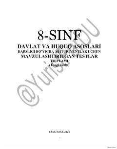

8D8-sinf Davlat va huquq asoslari fanidan yangi tahrirdagi qonunchilikka asoslangan testlar to'plami.
Ushbu qo'llanma 8-sinf "Davlat va huquq asoslari" darsligi asosida abituriyentlar va o'quvchilar uchun tayyorlangan mavzulashtirilgan testlar to'plamidir. Kitob 2025-yil holatiga ko'ra yangi tahrirdagi Konstitutsiya va Mehnat Kodeksi normalarini o'z ichiga oladi.